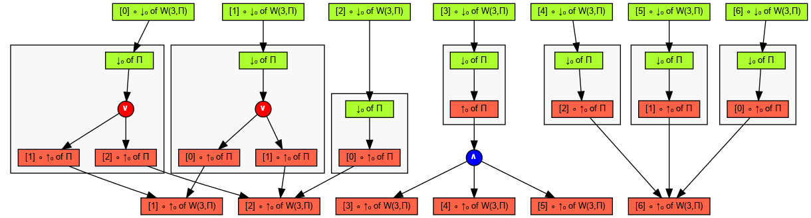

Evaluates the product of elements of a sliding window of width 3, and
requests the explanation of all elements of the output vector in a single
graph. Graphically, this is represented by the following circuit:
Explanation
The program evaluates this circuit on the input
[1, 0, 0, 3, 4, 5, 0, 6, 7], and then requests the explanation graph
corresponding to each element of the resulting output vector. All these
explanations are merged into the same lineage graph. This is done by
successively requesting the explanation for each output element, and
passing the same
NodeFactory instance on each call. Thus, graph
nodes created for one explanation can be reused if they appear in another
explanation, resulting in a "merged" graph of all individual explanations.
Full graph
The full explanation graph corresponding to that explanation is the
following.

One can see that the graph has multiple roots, one for the explanation of
each element of the output vector. Some explanations also have nodes in common.
Simplified graph
The simplified graph only keeps the leaves and intermediate Boolean nodes,
but conveys the same information:
Some other observations can be made on this graph:
- Both the first and second elements of the input vector (the two green
nodes at the upper left) have the same two alternate explanations: the
second and third elements of the input vector. Indeed, these two elements
are null, and either of them suffices for the whole window to evaluate to
zero.
- The value of the 5th to 7th elements of the output vector (the three
green nodes at the upper right) are all explained by the same input element.
- The first element of the input vector ([0] ∘ ↑₀), as well as the the
last two, are not involved in the explanation of any output element. That is,
changing their value would not have any impact on the output.